Como sugestão, configure a opção de leitura de caracteres e de pontuação de seu leitor de tela para o grau máximo de leitura, a fim de que os códigos disponibilizados neste material sejam lidos corretamente. No caso do NVDA (NonVisual Desktop Access), para localizar a opção Grau de pontuação/símbolos, acesse Preferências – Configurações – Fala. Altere o padrão Pouco para Tudo. Dessa forma, o leitor passará a ler os segmentos de código em sua totalidade.
Quando se pensa em controle de código e versionamento, sabe-se que um projeto, caso se esteja trabalhando sozinho nele, pode estar apenas no repositório local, armazenado na própria máquina do desenvolvedor. No entanto, quando se trabalha com uma equipe de desenvolvedores, torna-se necessário o uso de um repositório remoto que possa ser acessado por toda a equipe e que centralize todos os branches, commits, logs etc.
Veja algumas características de repositórios locais e remotos:
Localização
Quanto à localização, os repositórios locais podem estar armazenados nos computadores dos membros da equipe de desenvolvimento. Já os repositórios remotos estarão armazenados em computadores que são acessados remotamente por toda a equipe, podendo ser hospedados tanto na Internet quanto na própria rede interna da equipe.
Funcionalidades
Quanto às funcionalidades de cada um, falando tecnicamente para a equipe, os repositórios local e remoto funcionam da mesma maneira, com os mesmos comandos e os os mesmos branches, commits e logs (descritos no decorrer deste conteúdo). No entanto, em um repositório local, haverá uma cópia de todo o trabalho e todas as versões do projeto que podem ser usadas. Já no repositório remoto não há essa pasta com todos os arquivos, há apenas a pasta .git do projeto.
Repositórios
Quanto ao uso de repositórios, é importante sempre lembrar que os trabalhos nos projetos sempre ocorrem na máquina local; todas as modificações no código e seus commits são feitos localmente. Com isso, e após isso, as modificações podem ser “subidas” para um repositório remoto com o intuito de compartilhar com todo o time de desenvolvimento. Nunca se deve esquecer de que repositórios remotos são uma maneira de compartilhar e dividir código entre desenvolvedores, e não uma maneira de armazenar e trabalhar com arquivos.
Criação de repositórios
Quanto à criação de repositórios, há duas opções: usar um repositório local, que pode ser criado do zero ou clonado de um repositório local existente, ou então criar um repositório remoto, que pode ser feito de duas maneiras (caso você já tenha um repositório local, basta você cloná-lo com a tag -- bare; e em caso de criar um novo repositório remoto em branco, basta usar o comando git init também com a tag --bare).
Fluxo de trabalho
Quanto ao fluxo de trabalho em repositórios remotos e locais, ao usar o Git para controle de seu repositório, há apenas alguns comandos para interagir com repositórios remotos, pois a grande maioria das operações que são executadas se dão no repositório local. A menos que você tenha clonado um projeto remoto, estará trabalhando exclusivamente em um repositório local que nunca deixará a própria máquina. Com isso, para trabalhar com um repositório Git local, nem mesmo a Internet é necessária, pois todo o trabalho pode ser feito de maneira off-line.
A seguir, veja uma figura que representa o fluxo de trabalho de um repositório Git que é tanto local quanto remoto.
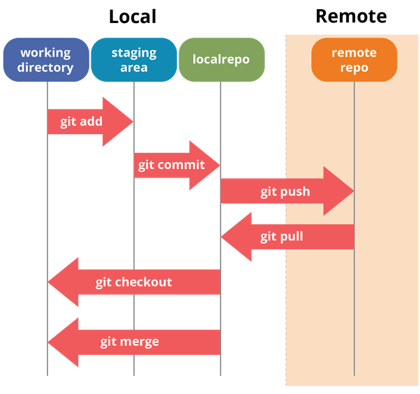Clique ou toque para ampliar.
Figura 1 – Visualizando como funciona um repositório local e remoto
Fonte: Senac EAD (2023)
Na imagem, é possível ver, separados entre esquerda e direita, no topo, repositórios local e remoto. Logo abaixo, na coluna do repositório local, há três linhas: a primeira chamada working directory, a segunda chamada staging area e a terceira chamada “localrepo”. A primeira delas tem uma seta que a liga à linha staging area, na qual está escrito o comando git add. A linha staging area tem uma flecha ligando-a à linha “localrepo”, na qual está escrito o comando git commit. Já a linha “localrepo” está ligada à coluna remote com uma seta que tem o comando git push. Agora, voltando do remoto até a primeira linha, há uma seta da linha remote repo da coluna remote ligando para a esquerda na linha “localrepo” com o comando git pull e duas setas ligando a linha “localrepo” ao working directory com os comandos git checkout e git merge.
O armazenamento em nuvem refere-se a algo armazenado em um computador que não está localmente com o usuário, e sim em algum lugar remoto.
Pode-se pensar em diversos serviços de armazenamento na nuvem disponíveis: iCloud, OneDrive, Google Drive etc. No entanto, para versionamento de código, não basta ter um lugar na nuvem para armazenamento, pois, assim, haverá apenas os seus arquivos on-line, sem uma organização específica ou um controle de envios e atualizações.
Apenas armazenar arquivos em nuvem não difere muito (nem deve diferir) de guardar arquivos em uma pasta local do computador. Assim, caso sejam feitas alterações localmente nos arquivos, tornaria-se muito inconveniente manter a nuvem e o armazenamento local sincronizados. O problema ficaria ainda maior caso houvesse uma equipe de desenvolvimento, pois várias pessoas mantendo vários arquivos em um armazenamento on-line seria muito caótico e antiprodutivo.
Armazenar códigos na nuvem refere-se a serviços on-line que têm um servidor Git rodando e ao qual se tem acesso para fazer a manutenção dos códigos.
Em meados de 2005, o criador do Kernel Linux, Linus Torvalds, já não conseguia manter um código tão grande e complexo e contava com a participação de milhares de colaboradores do projeto Linux. Ele então pensou em como criar uma ferramenta que pudesse ter velocidade, fosse simples, pudesse manter milhares de ramificações de código, fosse completamente distribuída e on-line e conseguisse lidar com grandes projetos com eficiência. Ele criou então, no ano de 2005 o Git, um sistema de gerenciamento de configuração que ajuda você a acompanhar todas as alterações feitas no código do seu projeto. Você pode salvar cópias de seus trabalhos em momentos diferentes, para que possa voltar e ver o que escreveu anteriormente, por exemplo. Você também pode compartilhar seus códigos com outras pessoas e trabalhar neles juntos.
O Git funciona criando uma pasta especial em seu computador (repositório local), na qual você guarda todos os seus arquivos e códigos. Quando você quiser fazer uma alteração em um arquivo, você executa um comando git (no caso, o comando commit) para salvar uma cópia do código. Você também pode adicionar uma mensagem para explicar o que mudou.
O Git controla todas as cópias de seus arquivos e as mensagens que você adicionou. Dessa forma, você pode ver um histórico de todas as alterações feitas e o que estava pensando quando as fez.
Para usar o Git, você precisará instalá-lo em seu computador. Depois de instalado, você pode criar um novo projeto Git criando uma nova pasta e aplicar alguns comandos, como git init, para inicializar o repositório, git add, para informar alterações em um arquivo para o controle de versão, e git commit, para salvar a cópia atualizada do arquivo no controle de versão, informando uma observação que explica o que foi alterado.
Você também pode usar o Git para compartilhar seus arquivos com outras pessoas. Para fazer isso, você pode usar um serviço de nuvem como o GitHub (você verá como fazer uso do GitHub na sequência do conteúdo), que é um site que permite armazenar seus repositórios Git on-line. Você pode usar o Git para enviar suas alterações para o repositório no GitHub, e outras pessoas podem usar o Git para enviar essas alterações para os próprios computadores.
Há muito mais coisas que você pode fazer com o Git, mas essas são as etapas básicas para começar.
Veja, a seguir, alguns comandos Git comuns e uma breve explicação do que eles fazem.
Veja, a seguir, um exemplo de como você pode usar alguns desses comandos.
Pensando nesse modelo de colaboração em códigos de programação, há vários serviços gratuitos de armazenamento de códigos, por exemplo, GitHub, GitLab, BitBucket, entre outros. Porém não se pode esquecer de que é possível criar o próprio servidor na nuvem e, com ele, configurar e instalar um servidor Git para que seja utilizado, então, para o armazenamento de seus códigos.
Esse tipo de serviço é muito utilizado por empresas de desenvolvimento que não têm um servidor local. Então, algumas utilizam um servidor privado virtual (VPS) para fazer a manutenção de seus códigos na nuvem. Algumas empresas que alugam servidores virtuais privados são: Vultr, Digital Ocean, Amazon Aws, Google Cloud, entre outras.
Para armazenar seus códigos, hoje, existem diversos serviços gratuitos e on-line, que servem inclusive para usar como portfólio. Afinal de contas, as empresas, na hora de contratar um novo desenvolvedor, sempre dão uma conferida no seu GitHub, GitLab ou semelhante. Inclusive, é sempre bom colocar em seu currículo o link para os seus códigos armazenados nesses serviços on-line.
Aqui neste conteúdo, você verá como utilizar o GitHub, por ser o mais popular entre esses serviços. Contudo, tenha em mente que, em sua maioria, eles funcionam de maneira muito semelhante (e com pequenas alterações você será capaz de utilizar o que melhor lhe servir).
Para criar uma conta no GitHub, siga as etapas a seguir.
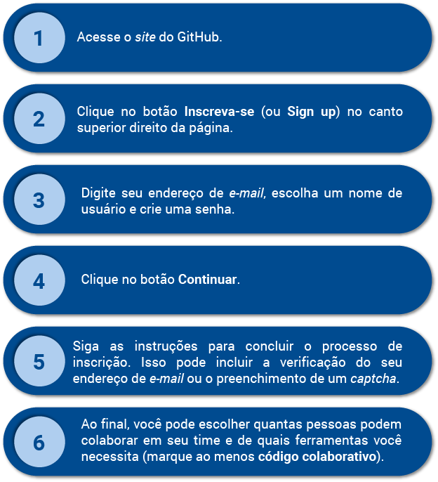Clique ou toque para ampliar
Depois de criar sua conta, você pode usar o GitHub para armazenar e gerenciar seus repositórios Git on-line. Você pode usar o Git para enviar suas alterações para o repositório no GitHub, e outras pessoas podem usar o Git para enviar essas alterações para os próprios computadores.
Um repositório tem a sua URL (uniform resource locator, ou localizador uniforme de recursos) remota, que nada mais é do que uma maneira “bonitinha” de dizer “o local onde o seu código está”. Nessa URL está a localização do seu código. No caso do GitHub, existem duas maneiras de subir o seu código utilizando essa URL remota, quais sejam:
Para criar um repositório remoto, utiliza-se o comando git remote add.
git remote add origin <REMOTE_URL>
O GitHub associa a URL remota a um nome, e, por padrão, usa-se o nome “origin”.
Caso seja necessário alterar essa URL, é possível usar o comando git remote set-url para fazer tal alteração.
Você saberá mais sobre esse tipo de operação na próxima parte do conteúdo, a qual abordará os programas utilizados para a configuração e a manutenção desses repositórios.
As URLs “https://” do GitHub estão disponíveis para todos os repositórios da plataforma. No entanto, quando você for executar um comando git clone, git fetch, git pull ou git push, será pedida uma senha de acesso e serão exibidas novas políticas de segurança da plataforma. Não se pode usar uma simples senha para executar esses comandos. Contudo, em vez da senha, você usará um token pessoal de acesso ao repositório.
Tokens de acesso pessoal aos repositórios são uma alternativa às senhas e devem ser usados para o acesso remoto a repositórios armazenados na plataforma GitHub.
Existem dois tipos de token de acesso aos repositórios, os fine-grained personal access tokens e os personal access tokens (classic). A plataforma sugere que seja utilizado o primeiro deles, em razão das vantagens que ele apresenta. Inclusive, com o fine-grained, as organizações podem liberar ou restringir acesso a certos repositórios, o que é interessante para empresas com um grande número de desenvolvedores.
As vantagens do fine-grained personal access token são:
Para efeito de estudo, neste conteúdo, será usado o token clássico, pois você trabalhará com repositórios pessoais de projetos de estudo.
Para criar esse token pessoal de acesso clássico, siga os seguintes passos:
Clique ou toque para ampliar.
Figura 2 – Clicando no ícone de conta do usuário
Fonte: Senac EAD (2023)
Na imagem, percebe-se que o ícone de conta do usuário foi clicado, o menu suspenso da conta em questão está aberto e a opção Settings está grifada.
Clique ou toque para ampliar.
Figura 3 – Item Developer Settings na página de configurações da conta
Fonte: GitHub (2023)
Página de configurações de perfil do GitHub mostrando, à esquerda, menu de opções, sendo a última delas Developer Settings.
Clique ou toque para ampliar.
Figura 4 – Opção Generate new token (classic)
Fonte: GitHub (2023)
Página Developer Settings do GitHub, destacando o item de menu lateral Personal access tokens expandido e subitem Token (classic) selecionado. Na área principal da tela, um título Personal access tokens (classic) e, à direita, um botão expansível Generate new token expandido, revelando as opções Generate new token e Generate new token (classic), que está selecionada.
Clique ou toque para ampliar.
Figura 5 – Nomeando o token a ser gerado
Fonte: Senac EAD (2023)
Na figura, há uma caixa de texto aguardando a entrada do nome descritivo do token a ser criado.
Clique ou toque para ampliar.
Figura 6 – Campo de data de expiração do token
Fonte: Senac EAD (2023)
Na imagem, há o menu de seleção do tempo de expiração do token a ser criado. No caso, está selecionada a opção 7 days.
Clique ou toque para ampliar.
No gif animado, há uma lista de seleção na qual o mouse seleciona algumas opções de permissão de escrita e de delete do token a ser gerado.
Clique ou toque para ampliar.
Figura 7 – Botão Generate token
Fonte: Senac EAD (2023)
Na imagem, está grifado o botão verde de Generate token.
O token, então, é gerado e pode ser usado como senha quando for questionado para executar as ações via linha de comando no repositório. É importante certificar-se de copiar e salvar esse token em algum arquivo, pois ele será exibido apenas uma vez pelo GitHub.
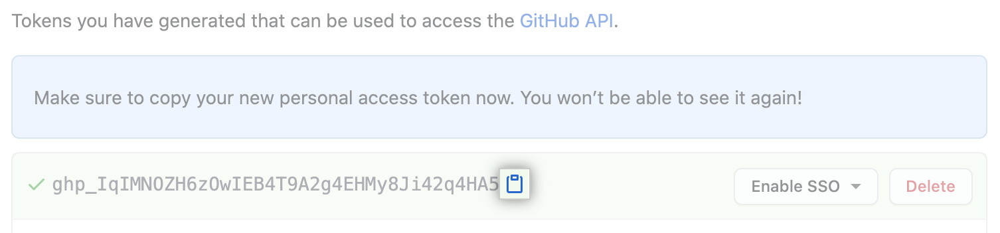Clique ou toque para ampliar.
Figura 8 – Token gerado e pronto para ser copiado e usado
Fonte: Senac EAD (2023)
Na imagem, percebe-se que o token foi gerado com sucesso. Grifado em destaque, há o botão de copiar o token para que possa ser colado na hora do login.
No Git, quando for necessário utilizar o token, é necessário informá-lo via linha de comando ou por meio da interface gráfica sendo utilizada. A seguir, veja um exemplo de como seria o uso do token em uma linha de comando.
$ git clone https://GitHub.com/USERNAME/REPO.git
Username: YOUR_USERNAME
Password: YOUR_TOKEN
Então, utilizam-se o seu nome de usuário do GitHub e, no campo de password, o token gerado para acesso ao repositório.
É claro que nem sempre será preciso recorrer a todos os comandos Git para executar seu trabalho diário em códigos e projetos. Para facilitar todas essas operações, existem diversos clientes Git que podem ser instalados, e suas ferramentas podem ser utilizadas para controlar e configurar seus repositórios.
Os mais populares entre esses clientes Git são:
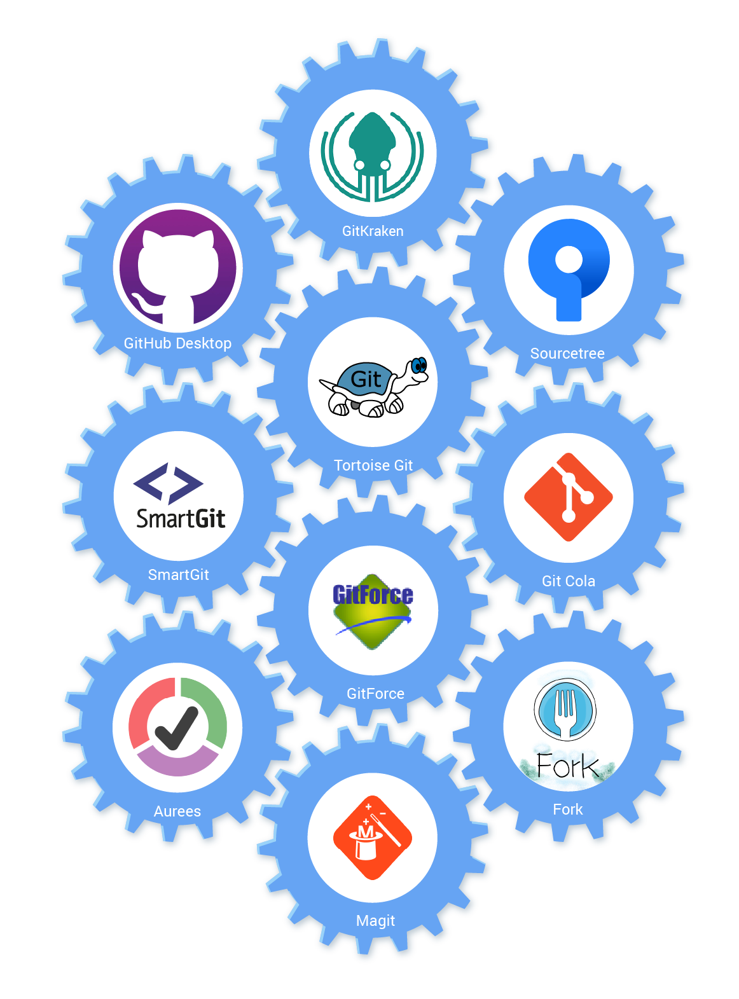Clique ou toque para ampliar.
Neste conteúdo, você verá como usar o GitHub Desktop, por ser o mais popular entre os clientes Git do mercado. Lembre-se de que qualquer um deles tem similaridades com o GitHub Desktop.
Ao acessar a página do GitHub Desktop (busque por “desktop GitHub” na Internet), você verá o botão, ao centro, com o link para o download do instalador para a versão Windows. Caso você seja usuário de macOS, logo abaixo, à direita, há o link para a versão do instalador.
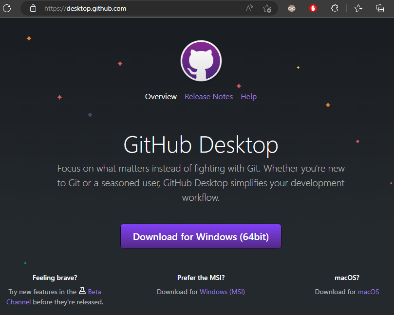Clique ou toque para ampliar.
Figura 9 – Página inicial para o download do app do GitHub Desktop
Fonte: GitHub Desktop (2023)
Na imagem, há a página desktop.github.com e, ao centro, o botão na cor roxa com o conteúdo Download for Windows.
Ao executar o instalador, você é levado à primeira tela, que faz a sugestão de logaritmos com sua conta do GitHub, o que facilitará muito o processo de configuração. Faça, então, o login com o seu usuário e a sua senha do GitHub.
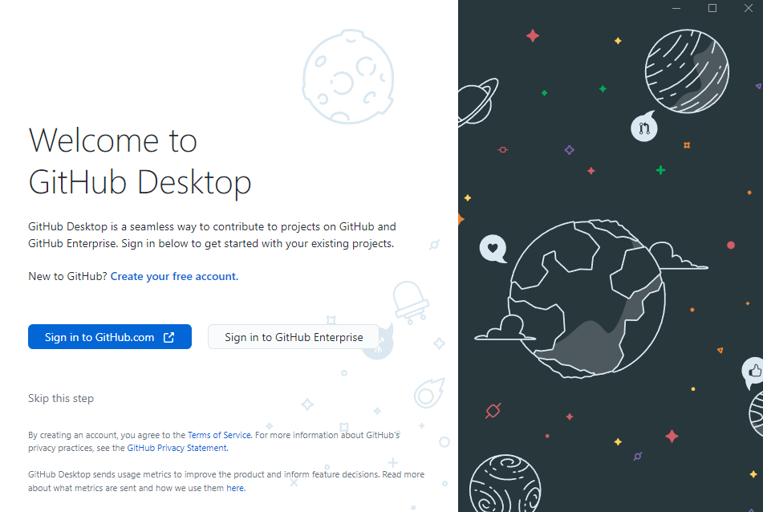Clique ou toque para ampliar.
Figura 10 – Tela inicial de instalação do GitHub Desktop
Fonte: GitHub Desktop (2023)
Na imagem, é possível ver a tela inicial de instalação do aplicativo baixado. À esquerda, no centro, há o botão azul Sign in to GitHub.com
Ao clicar em Sign in to GitHub.com (botão azul), você é levado à página de login do site do GitHub.
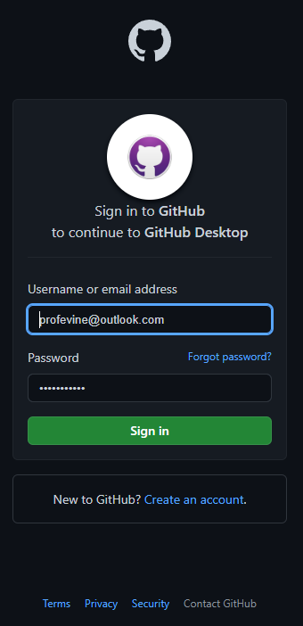Clique ou toque para ampliar.
Figura 11 – Entrando com usuário e senha para logar no GitHub
Fonte: GitHub (2023)
Tela de login do GitHub com os campos Username e Password e o botão em verde Sign in.
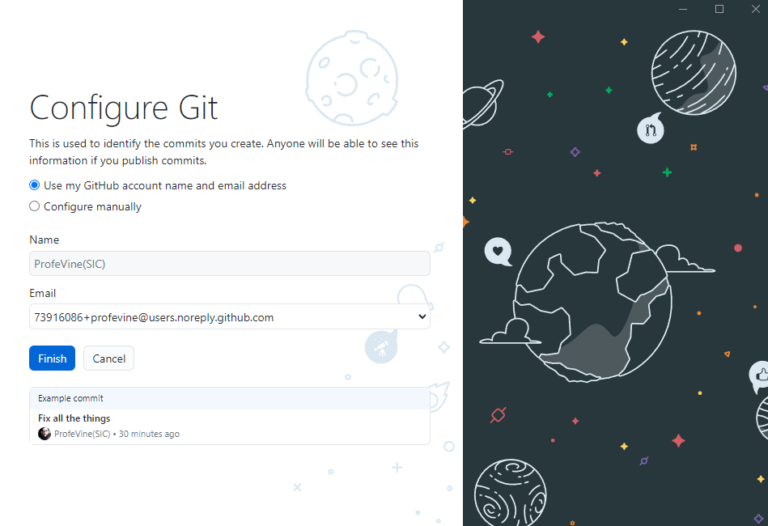Clique ou toque para ampliar.
Figura 12 – Tela de configuração inicial do GitHub Desktop
Fonte: GitHub Desktop (2023)
Tela de configuração inicial do GitHub Desktop, na qual se pode ver a seleção radial escolhida para utilizar a conta GitHub de login on-line e, em azul, o botão Finish. Abaixo, percebe-se que a conta está logada e funcionando.
É possível perceber que, agora, os dados da sua conta já foram “puxados” e você está pronto para concluir a instalação, clicando no botão azul Finish.
Após essa etapa, você já é levado à tela inicial do aplicativo, onde pode escolher a opção Create a tutorial repositlory (criar um repositório de tutorial) para aprender como criar um novo repositório no GitHub por meio do app.
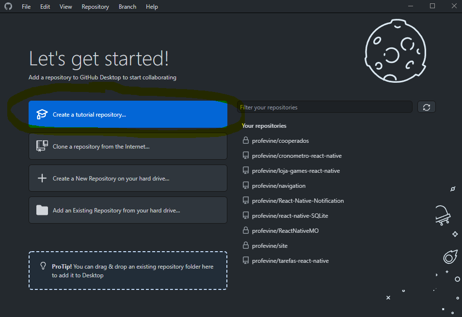Clique ou toque para ampliar.
Figura 13 – Tela inicial do GitHub Desktop (criando um repositório de tutorial)
Fonte: GitHub Desktop (2023)
Na imagem, há a tela inicial do GitHub Desktop (criando um repositório de tutorial). Está grifado o botão azul de criação de um repositório de tutorial.
A seguir, veja o botão azul que inicia a criação de um repositório e faz um tutorial de como criá-lo. É possível ver que, na lista à direita, em destaque amarelo, estão os repositórios que você já tem em sua conta do GitHub.
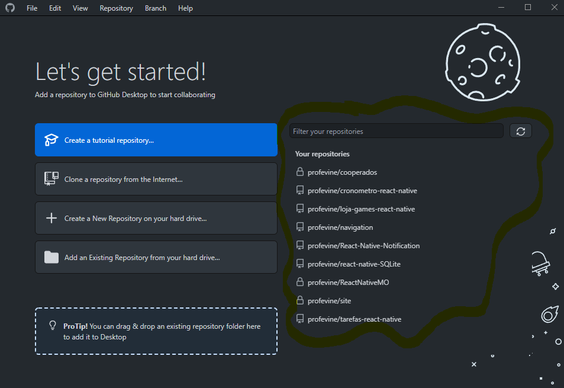Clique ou toque para ampliar.
Figura 14 – Repositórios remotos encontrados na conta logada em questão
Fonte: Senac EAD (2023)
Igual à figura anterior, porém agora estão grifados, à direita, os repositórios remotos da conta logada em questão.
Ao clicar no botão de criação de repositório, tutorial, você receberá um alerta:
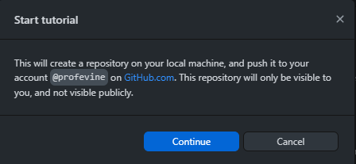Clique ou toque para ampliar.
Figura 15 – Caixa de alerta de início do tutorial
Fonte: GitHub (2023)
Na imagem, há a caixa de diálogo de início do tutorial com os botões Continue, em azul, e Cancel, em cinza.
Nesse aviso, está escrito que o tutorial criará um repositório na sua máquina local com o nome da sua conta no GitHub e que esse repositório será visível apenas para você que o criou. É possível clicar, então, no botão azul Continue.
A criação do repositório começará com a barra de progresso em branco sendo preenchida. Assim que o GitHub Desktop for fazer o upload do repositório para o site do GitHub, você será questionado sobre o token de conexão que criou anteriormente, mas, como você está no ambiente desktop, pode fazer novamente o login pelo site, clicando no botão azul Sign in with your Browser. Caso queira logar com o token criado, basta clicar no botão cinza Sign in with a code.
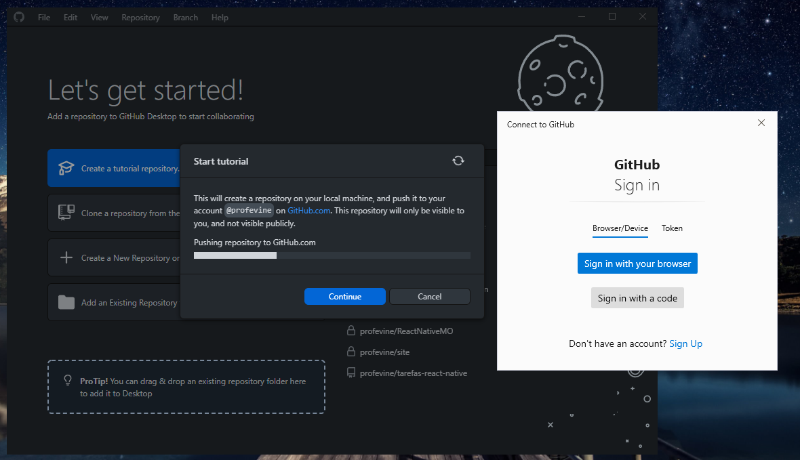Clique ou toque para ampliar.
Figura 16 – Logando com o navegador ou com o token
Fonte: GitHub (2023)
Na imagem, há o alerta da figura anterior e também a janela de login com as opções de logar com o navegador ou com o token criado.
Clicando em Sign in with your Browser, você será redirecionado mais uma vez ao navegador, mas, como já fez o login antes, desta vez será apenas direcionado ao aplicativo e receberá no navegador a tela de conexão bem-sucedida.
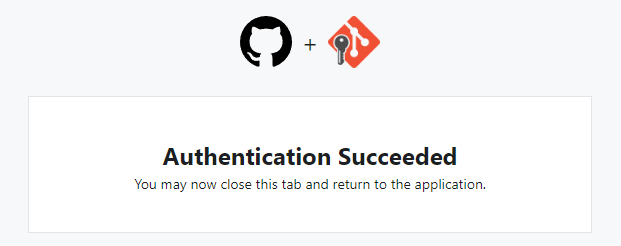Clique ou toque para ampliar.
Figura 17 – Alerta de login com sucesso
Fonte: GitHub (2023)
Na imagem, há o alerta de autenticação efetuada com sucesso.
Feito isso, a configuração do seu primeiro repositório local e remoto está pronta.
O repositório local será criado em uma pasta semelhante a esta: C:\Users\usuario\Documents\GitHub\desktop-tutorial. Assim, você estará pronto para fazer seus commits e pushes à vontade.
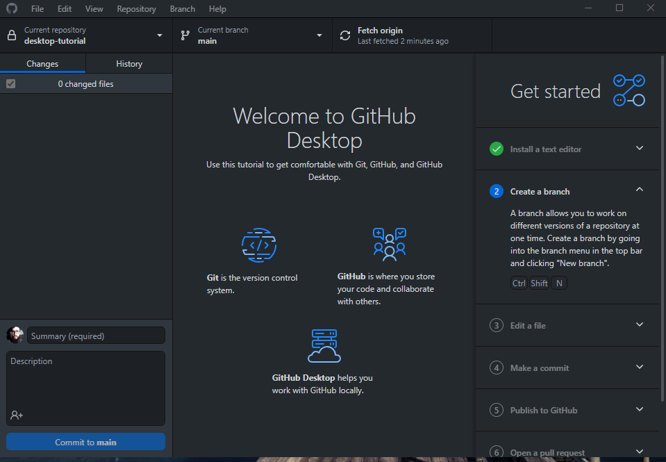Clique ou toque para ampliar.
Figura 18 – Repositório de tutorial criado com sucesso
Fonte: GitHub Desktop (2023)
Na imagem, há a tela principal do GitHub Desktop e, à direita, a lista de tarefas do tutorial criado.
Após a criação do repositório, você pode, então, começar propriamente o tutorial à direita, onde é possível ver uma lista com alguns passos a serem seguidos para aprender o básico sobre o gerenciamento do repositório criado.
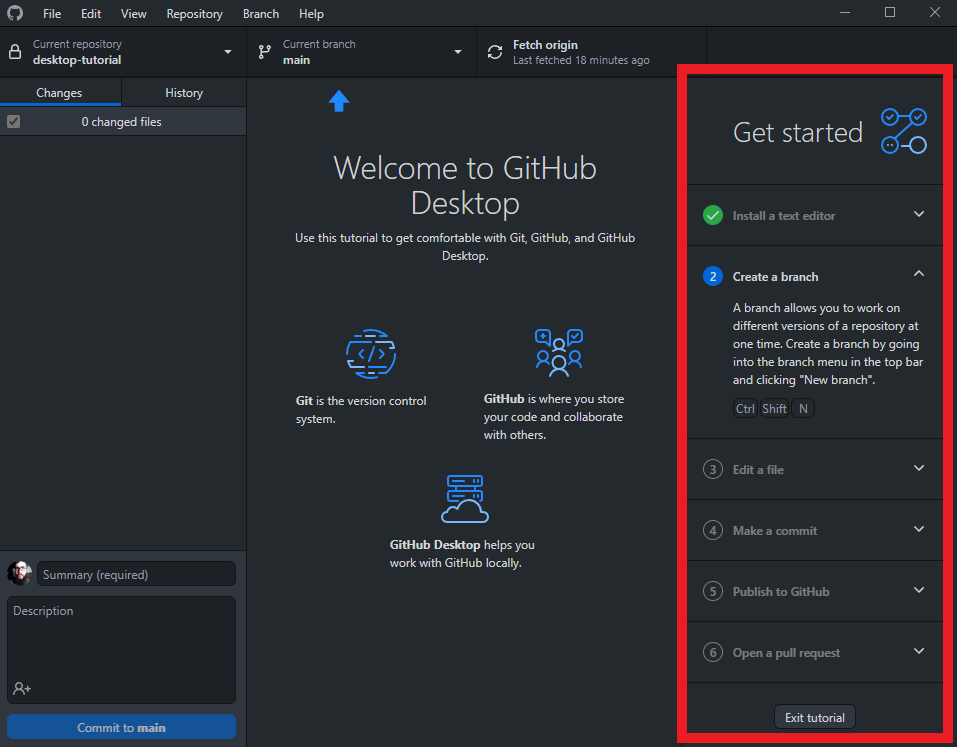Clique ou toque para ampliar.
Figura 19 – Barra com o passo a passo do tutorial
Fonte: GitHub Desktop (2023)
Na imagem, há a tela principal do GitHub Desktop e, grifado à direita, a lista de tarefas do tutorial criado.
Pode-se ver, neste caso, que o primeiro passo, Install a text editor (instalar um editor de texto), já está cumprido, pois, na máquina, você já tem um editor de texto instalado. Na sua máquina, você pode utilizar o editor de código ou texto de sua preferência, NetBeans, VsCode, Sublime etc.
O passo número dois do tutorial nos ensina a como criar uma nova branch (ramificação) para o nosso repositório. Essas ramificações podem sofrer alterações sem prejudicar nem alterar o código da branch principal. Esse novo ramo criado só entrará para o ramo principal caso ele seja merged (mesclado) com o principal do projeto.
Há duas maneiras de fazer isso: clicando no seletor de branches, que, no momento, está em branch main, como aponta a seta azul, ou então apertando as teclas Ctrl + Shift + N.
Ao apertar o atalho Ctrl + Shift + N, a janela de criação de nova branch se abre e pede que você escolha um nome para ela. Neste caso, será criada a branch “teste”.
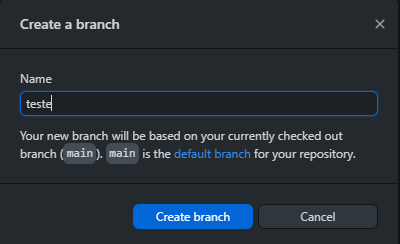Clique ou toque para ampliar.
Figura 20 – Criando uma nova branch no projeto do tutorial
Fonte: GitHub Desktop (2023)
Na imagem, há a janela de criação de uma nova branch e, na caixa de texto do nome da nova branch, há a palavra “teste”.
Após clicar no botão Create branch, você verá que a branch foi criada e que é atualmente a selecionada.
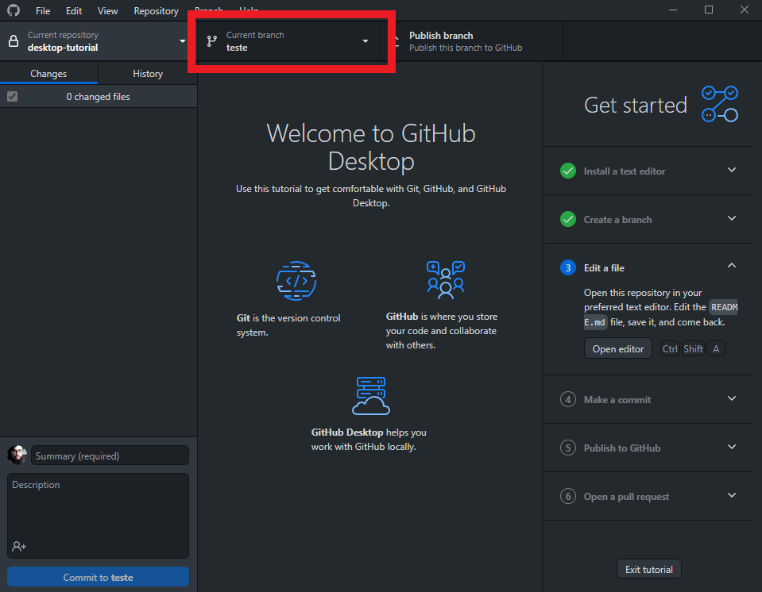Clique ou toque para ampliar.
Figura 21 – Branch criada e em uso com sucesso
Fonte: GitHub Desktop (2023)
Na imagem, há a tela inicial do GitHub Desktop e, grifado ao centro, no topo, há a confirmação de que a branch está criada e selecionada como ativa.
O próximo passo é editar o arquivo README.md.
O README.md é a “pagina” principal do seu repositório e deve conter informações sobre o repositório para auxiliar quem for usar o código ou contribuir com ele. Principalmente se o código for compartilhado com uma equipe, é no README.md que você colocará as instruções para a equipe.
É preciso levar em consideração alguns fatores ao criar o README.md.
O nome do arquivo deve sempre ser README.md, e esse arquivo contém (não obrigatoriamente) o seguinte:
Exemplo de um README.md:
# Repositório de teste para conteúdo do curdo TDS EAD Senac - Criado por...
Este é apenas um repositório de teste para configuração e funcionalidades do aplicativo para desktop GitHub Desktop
Livre para uso pessoal irrestrito.
Voltando ao tutorial, siga com o próximo passo.
Usando o atalho Ctrl + Shift + A, o seu editor configurado como padrão em sua máquina já abrirá o arquivo README.md do seu repositório local.
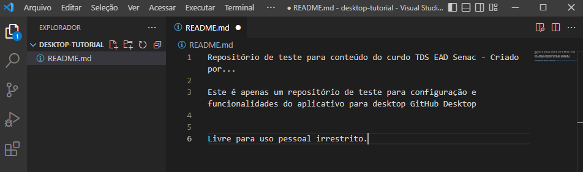Clique ou toque para ampliar.
Figura 22 – Tela do editor de texto criando uma alteração no README.md
Fonte: Senac EAD (2023)
Na imagem, há a tela do editor de texto com a alteração do texto inicial do README.md padrão.
Após inserir o texto do README.md, é possível salvar o arquivo e voltar para o GitHub Desktop.
Ao voltar, você verá que as alterações feitas no README.md já foram apontadas e as diferenças já foram mostradas.
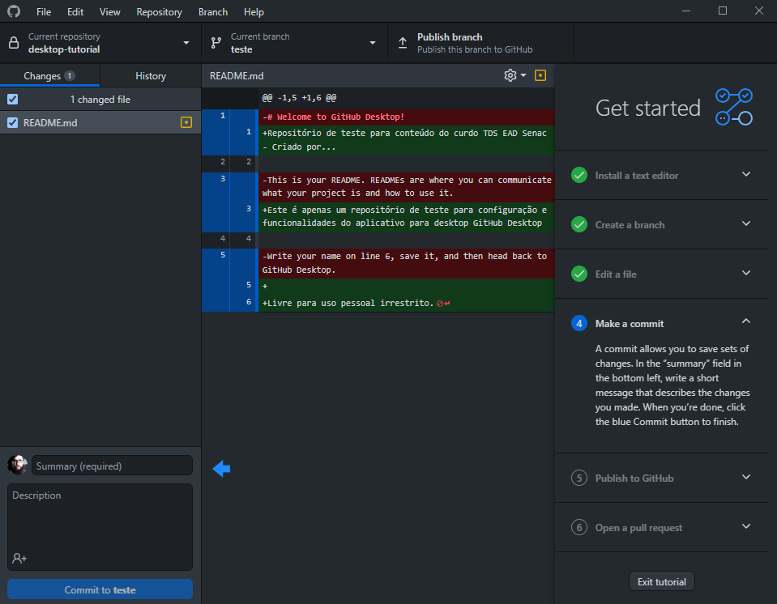Clique ou toque para ampliar.
Figura 23 – Diferenças a serem aplicadas com o commit, mostrando as linhas que foram apagadas, em vermelho, e as que serão adicionadas, em verde
Fonte: GitHub Desktop (2023)
Na imagem, há a tela do GitHub Desktop. Ao centro, as diferenças a serem aplicadas com o commit, mostrando as linhas que foram apagadas, em vermelho, e as que serão adicionadas, em verde.
Como indicado, à esquerda, veja o arquivo que foi alterado, no caso o README.md. No centro, as linhas de código foram alteradas, no caso, foi apagado o readme padrão e o texto novo foi inserido.
Você está pronto para fazer o seu primeiro commit.
Para efetuar o commit, você deve escrever um resumo (summary) do que foi feito de alterações, incluir uma descrição e, daí sim, clicar em Commit to teste, em que “teste” é a branch que você criou e está selecionada.
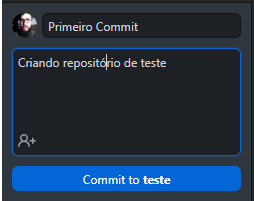Clique ou toque para ampliar.
Figura 24 – Primeiro commit
Fonte: Senac EAD (2023)
Na imagem, há em detalhes o canto inferior esquerdo do GitHub Desktop, onde se tem, ao topo, o nome do commit a ser criado e, abaixo, a descrição dele. No final da imagem, há o botão de aceitar o commit à branch teste.
Após isso, o primeiro commit foi feito e falta apenas o push para que seja publicado (upload) para a branch teste no repositório remoto do GitHub.
Para fazer o push, é possível usar o atalho Ctrl + P ou clicar onde indica a seta azul.
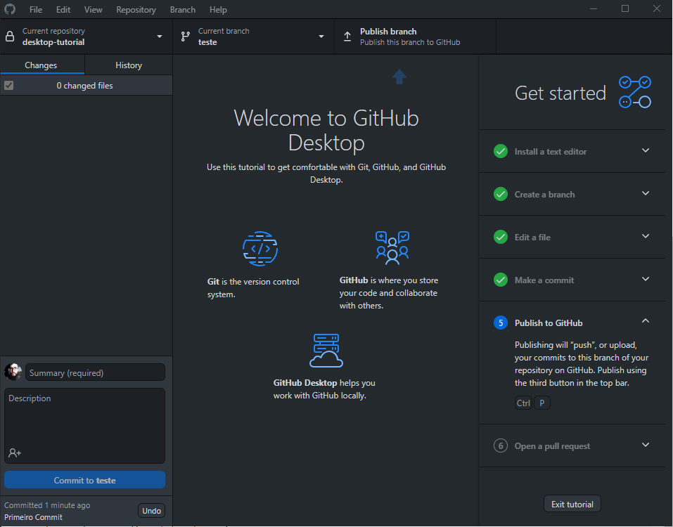Clique ou toque para ampliar.
Figura 25 – Fazendo o primeiro push
Fonte: GitHub Desktop (2023)
Na imagem, há a tela inicial do GitHub Desktop, mas, desta vez, vê-se que os passos do tutorial foram cumpridos e faltam apenas os passos 5, Publish to GitHub, e 6, Open a pull request.
Após isso, só resta solicitar um pull request, que significa que se está solicitando que a nossa branch seja mesclada com a branch principal.
Pode-se fazer isso clicando no botão Open a pull request, para abrir o pull request direto no site do GitHub.
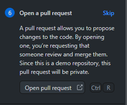Clique ou toque para ampliar.
Figura 26 – Botão Open a pull request
Fonte: GitHub Desktop (2023)
Na imagem, há o alerta de criação de um pull request com o botão abaixo de Open a pull request, bem como a dica de atalho de teclado Ctrl + R.
Clicando no botão, você é levado diretamente para a página de solicitação de pull request.
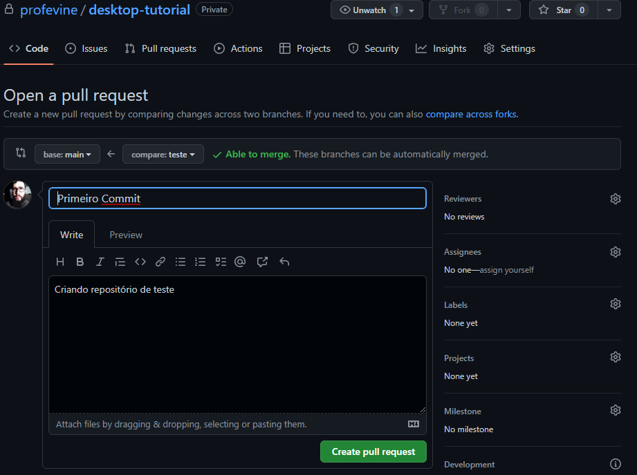Clique ou toque para ampliar.
Figura 27 – Página do GitHub de abertura de um pull request
Fonte: GitHub (2023)
Na imagem, há o site do GitHub com a página de solicitação de um pull request com o commit criado nos passos anteriores. Abaixo, à direita, há o botão Create pull request.
Ao clicar no botão verde Create pull request, veja que você criou uma linha do tempo onde nosso pull foi solicitado.
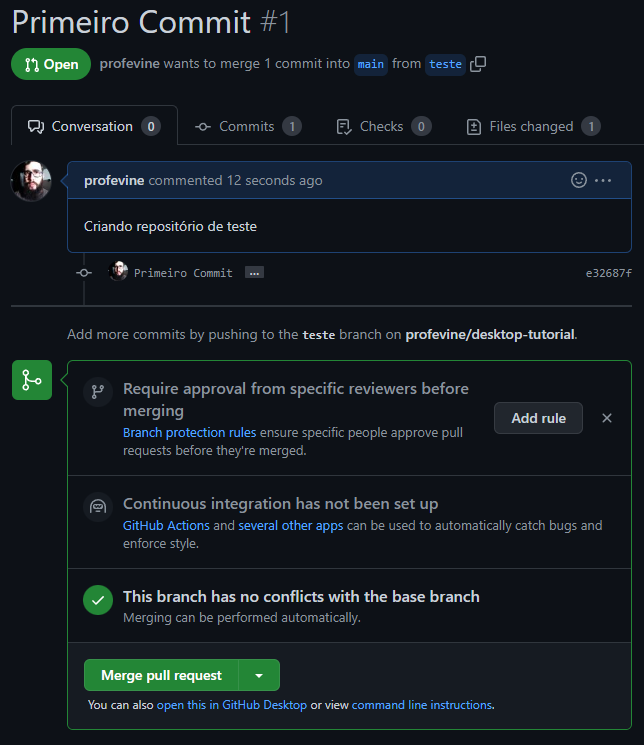Clique ou toque para ampliar.
Figura 28 – Agora basta o responsável verificar e aceitar ou não a nossa request
Fonte: GitHub (2023)
Na imagem, há a página do GitHub com o pull request em estado de aprovação. Abaixo, há o botão de aceitar e mesclar com a branch principal o commit que foi criado nos passos anteriores.
O GitHub Desktop é um aplicativo de interface gráfica do usuário (GUI) para usar o Git em seu computador, enquanto o Git Bash é um aplicativo de interface de linha de comando (CLI) para usar o Git. Ambos permitem que você use o Git para gerenciar seus repositórios de código, mas funcionam de maneiras diferentes.
O GitHub Desktop foi projetado para ser mais amigável e fácil de usar, principalmente para pessoas que são novas no Git ou que não se sentem confortáveis com o uso da linha de comando. Ele fornece uma interface visual para trabalhar com repositórios, permitindo que você execute tarefas comuns do Git, como confirmar alterações, ramificar e mesclar sem precisar usar a linha de comando.
O Git Bash, por outro lado, é um aplicativo de linha de comando que fornece uma interface shell para trabalhar com o Git. Ele permite que você use comandos Git e trabalhe com seus repositórios usando comandos baseados em texto em vez de uma interface gráfica. Isso pode ser mais eficiente para usuários experientes que se sentem confortáveis com a linha de comando, mas pode ser menos intuitivo para quem é novo no Git ou prefere uma interface mais visual.
No geral, a escolha entre o GitHub Desktop e o Git Bash depende das suas preferências pessoais e do nível de conforto com o uso da linha de comando. Ambos podem ser ferramentas úteis para trabalhar com o Git, e você pode usar qualquer um deles, dependendo do que funcione melhor para você.
Para instalar o Git Bash, siga estas etapas:
Clique ou toque para ampliar.
Figura 29 – Página de downloads do Git
Fonte: Git (2023)
Página com o título “git --local-branching-on-the-cheap”. Abaixo, à esquerda, um menu com opções de link About, Documentation, Downloads e Community”. À direita, um quadro com título Downloads, mostrando, abaixo, links para macOS, Windows, Linux/Unix. A página também mostra a figura de um monitor com o texto “Latest source Release 2.39.0”.
Clique ou toque para ampliar.
Figura 30 – Instalando o Git Bash e selecionando (em destaque) a criação de ícone de atalho na área de trabalho
Fonte: Git Bash (2023)
Na imagem, há a tela de instalação do Git Bash. Algumas caixas de seleção estão à mostra no centro da janela. Entre elas está grifada e selecionada a opção de criar atalhos na área de trabalho.
Para usar o Git Bash, você precisará abrir o aplicativo após a instalação. No Windows, você pode fazer isso procurando por “Git Bash” no menu Iniciar ou clicando no ícone do Git Bash na área de trabalho (se você escolheu criar um durante a instalação).
Quando o Git Bash estiver aberto, você verá uma janela de terminal. É aqui que você pode inserir comandos do Git e trabalhar com seus repositórios. Para começar, você pode tentar alguns comandos básicos do Git, como git clone para clonar um repositório de um servidor remoto ou git init para criar um novo repositório. Você também pode usar o comando git help para obter uma lista de comandos disponíveis e consultar a documentação de ajuda para comandos específicos.
Abra o Git Bash e navegue até o diretório onde deseja criar o repositório, usando o comando cd. Por exemplo, se você deseja criar o repositório em seu diretório de usuário, pode usar o comando cd ~ para navegar até o seu diretório inicial.
Execute o comando git init para criar um novo repositório. Isso criará um novo diretório .git no diretório atual, que será usado para armazenar o histórico do repositório e outros metadados.
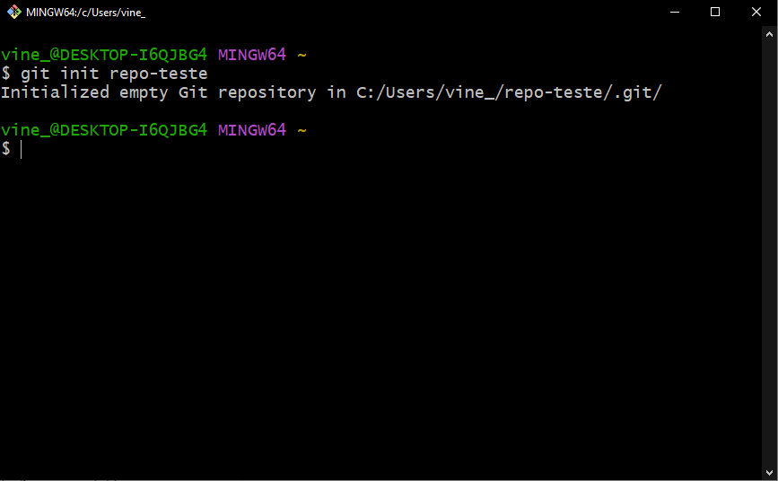Clique ou toque para ampliar.
Figura 31 – Criando um repositório local chamado de repo-teste
Fonte: Git Bash (2023)
Na imagem, há a linha de comando do Git Bash. O comando git init repo-teste foi executado e o aviso de repositório criado com sucesso está na tela.
Para criar um novo arquivo no repositório, use um editor de texto ou o comando echo (comando usado para escrever texto na tela) para criar um novo arquivo e salve-o no diretório do repositório. Por exemplo, você pode usar o comando echo "Hello, world!" > hello.txt. Esse comando criará um novo arquivo chamado hello.txt com o texto "Hello, world!"
Para adicionar o arquivo ao repositório, use o comando git add seguido do nome do arquivo. Por exemplo, para adicionar o arquivo hello.txt, use o comando git add hello.txt. Isso preparará o arquivo, o que significa que ele estará pronto para ser enviado ao repositório.
Para confirmar o arquivo no repositório, use o comando git commit. Isso abrirá um editor de texto em que você pode inserir uma mensagem de confirmação explicando as alterações feitas. Quando terminar, salve a mensagem e saia do editor de texto. O arquivo será confirmado no repositório e adicionado ao histórico do repositório.
É isso! Você criou um novo repositório e adicionou um arquivo a ele usando o Git Bash.
Mais detalhes quanto ao uso do Git Bash você verá na sequência dos conteúdos desta unidade curricular.
Aqui estão alguns prós e alguns contras do uso do Git:
Clique ou toque para visualizar o conteúdo.
Prós
Contras
Em geral, o Git é uma ferramenta poderosa e útil para gerenciar e colaborar em projetos, mas pode não ser a melhor escolha para todos. É importante pesar os prós e os contras e decidir se é a ferramenta certa para as suas necessidades.
Com a utilização dessa ferramenta, é possível agilizar e controlar códigos enviados por diversas pessoas para um mesmo repositório remoto.
Você viu, neste conteúdo, que pode hospedar os seus repositórios de diversas maneiras, tanto local quanto remotamente.
Além disso, você também aprendeu como instalar, configurar e subir o seu primeiro repositório local para o repositório remoto no GitHub usando o aplicativo oficial GitHub Desktop.